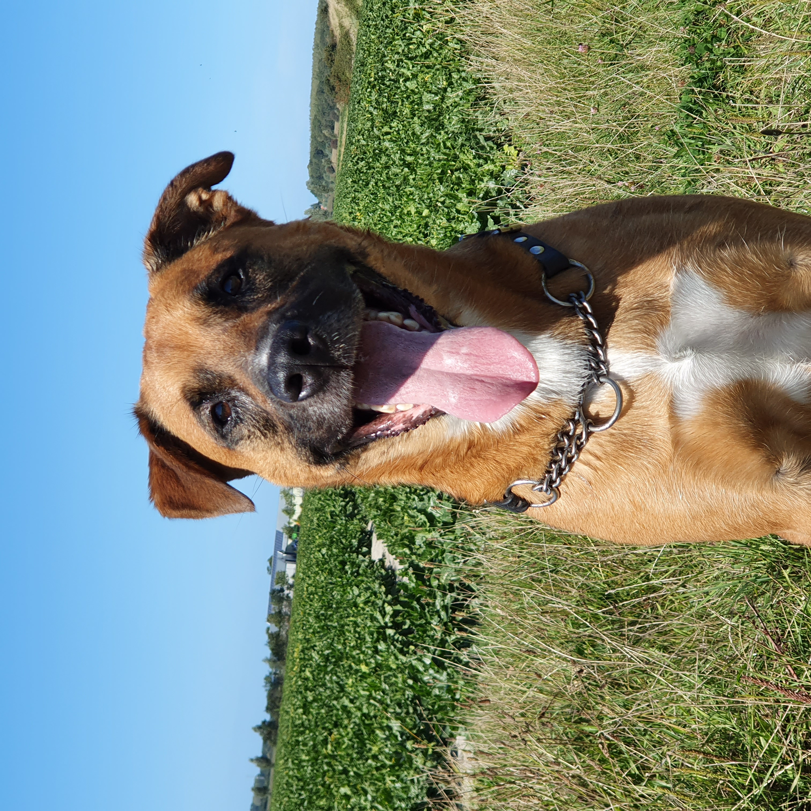

Who am I?
Hello! My name is Pedro Baaijens I am 18 years old. I live in Arnemuiden which is located around 20-25 minutes driving distance on a bike.
I am known for being late everywhere. Class, work, parties etc. I live 20 meters away from my first school where I went to at the age of 5 if I am correct.
In middleschool I did VWO for 4 years untill I managed to screw up alot of my classes and ended up in HAVO year 4. I had a N+T profile which exists of Physics,
chemistry, B level mathematics and the normal classes like languages or Physical Education but most importantly Informatica which brought me into coding and O&O
which learned me how to manage projects and work in groups. When I was done with middleschool I chose to do HBO-ICT. I live with my parents and sister accompanied by
A dog and 1 cat since the other one went missing in the first week of last month so maybe I have 2 I don't know.
My hobbies
So now you know who I am and how I ended up here. I wanna talk about my hobbies and what I do in my daily life. I play games since I was like 5 years old when my father played Unreal Tournament 1999 and Battlefield 1942 with me and I kept playing games from then on. I am in a semi-professional Rocket League team under Damage Incorporated (DI). I play literally every kind of game aslong as I can play it with friends. I used to play football from when I was 5 years old till I was 16 years old and played in Arnemuiden F4, E3, D2, C1, B1 and A1 (for 1 month and then I quit). I am practicing guitar and piano and suck at both but it's fun to do so whatever. I used to fish alot but stopped with that too. I party almost every week and I work in a restaurant in Veere named Suster Anna. I worked at the Albert Heijn too for like 4 months but I hated it there so I quit. I used to repair bikes and sometimes still do. I train in our attic, we got some fitness equipment there and weights to keep myself fit since I don't do football anymore, I do this every other day.


My characteristics
- Social
- Concentrated
- Team Focussed
- Calm
- Mostly motivated
- Able to put alot of effort in something
- Productive
- Positive
- Can have mood swings
Things I am inerested in / I like
Next to my almost daily hobbies I have some interests / things I like what you hardly can call having a hobby.
- Going for a walk with my dog I got a really energetic dog that wants to play all day everyday and can't sit still unless he has to sleep.
- Watching movies Unlike people that call watching movies a hobby, I rarely watch a movie but if I do it has to be a movie with good acting and that's why I like movies from Quentin Tarantino. Maybe you know some of his movies, his latest was Once Upon A Time In Hollywood and his best in my opinion is either Inglorious Basterds or Django Unchained.
- Music I listen to music everyday for a couple of hours and go to sleep listening to music. The main genres I listen to are Rock, Metal, Alternative, Pop, Electronic, blues and classical pieces. I am a huge fan of Coldplay and my favourite song from them is Death and All His Friends because of the progression and beautiful conclusion to the song. It is the ending song of the album Viva La Vida or Death and All His Friends and I guess alot of you will know the song Viva La Vida. Perhaps my absolute favourite song is Telegraph Road or Romeo and Juliet from Dire Straits.
- Politics Yea I know, politics. It's for alot of people the most boring thing on earth and sometimes I agree. But I like to know what's going on in the world so I read alot about politics and watch alot of politics.
- Following the market I am interested in the international stock market to see what happens to companies in certain times and just before and after a release of a product to be able to guess if I should invest in a company or not.
- Formula 1 I watch saturdays and sunday Formula 1 races if I don't have to work at the time. Even if nothing interesting happens and Mercedes is P1 and P2 again I still enjoy watching the midfield. Let's not talk about Ferrari.
